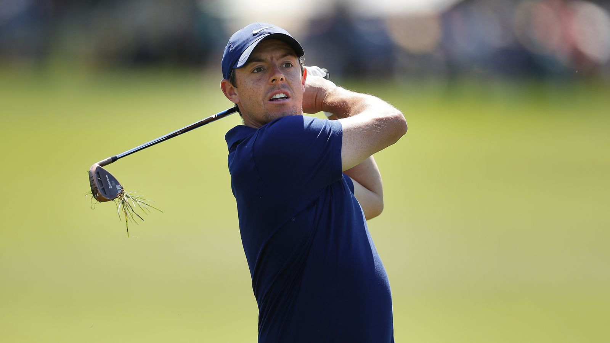
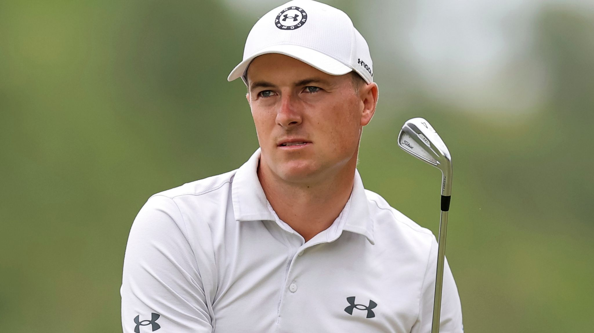
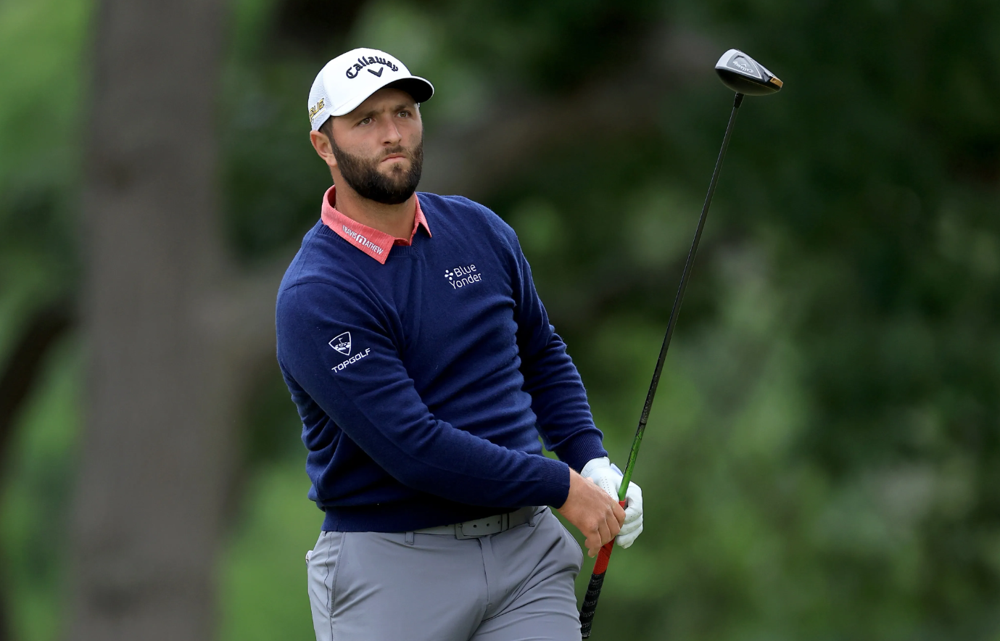
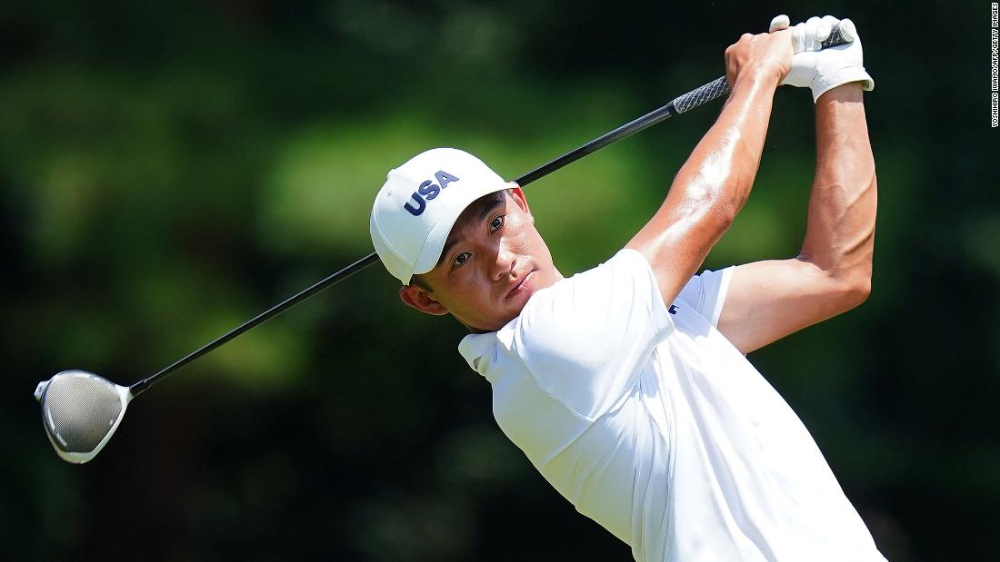

My Favorite PGA Golfers: The Icons of the Fairway
Golf is more than just a game; it’s a test of skill, patience, and mental toughness. Over the years, many PGA Tour players have captured the imagination of fans worldwide, including me. Here’s a look at some of my favorite golfers who inspire and entertain every time they step on the course.
-
Tiger Woods – The LegendWhen it comes to golf, Tiger Woods is synonymous with greatness. His 82 PGA Tour wins, including 15 major championships, make him one of the most decorated players in history. Beyond the numbers, Tiger revolutionized the sport, bringing athleticism and a new audience to golf. Whether it’s his unforgettable 2008 U.S. Open win on one leg or his stunning 2019 Masters comeback, Tiger’s resilience and brilliance are unmatched.
-
Rory McIlroy – The Modern StarHailing from Northern Ireland, Rory McIlroy has been a dominant force on the PGA Tour for over a decade. Known for his incredible ball-striking and effortless power, Rory has won four major championships and countless fans. Off the course, his thoughtful demeanor and candid interviews show the personality behind the prodigious talent.
-
Jordan Spieth – The Comeback KingJordan Spieth burst onto the scene with his incredible win at the 2015 Masters, becoming the second-youngest champion in tournament history. With a putting stroke that’s pure magic and a flair for dramatic moments, Spieth has a way of captivating audiences. His journey back to form after a rough patch in his career shows the heart of a true champion.
-
Jon Rahm – The PowerhouseJon Rahm’s fiery passion and relentless determination have made him one of the top players in the world. The Spaniard’s 2021 U.S. Open win, complete with clutch putts on the final holes, solidified his place among the game's elite. His combination of skill and emotion makes him a player you can’t help but root for.
-
Collin Morikawa – The Precision ArtistIn an era of power hitters, Collin Morikawa has stood out with his pinpoint accuracy and calm demeanor. Winning two majors by the age of 24, including a stellar debut at the 2020 PGA Championship, Morikawa is a masterclass in consistency. His smooth swing and cool head make him one of the brightest young stars in golf.





A Hard Choice for Players: PGA vs. LIV Golf
In recent years, the golf world has been captivated by a burgeoning rivalry that has shaken the foundations of
the sport: the PGA Tour versus LIV Golf. This clash of titans has sparked passionate debates among players,
fans, and industry insiders, marking a new era in professional golf. LIV Golf, backed by significant funding and a bold vision, burst onto the scene with promises of innovation
and disruption. Its format, which includes team-based competition and shorter events, offers a stark contrast to
the traditional structure of the PGA Tour. By positioning itself as a fresh alternative, LIV Golf has sought to
attract not only new audiences but also some of the sport’s biggest stars. At the heart of the rivalry is the migration of high-profile players. For decades, the PGA Tour has been the
pinnacle of professional golf, offering prestige and tradition. However, LIV Golf’s lucrative contracts and
unique format have enticed a growing number of athletes to make the switch. This exodus has intensified
competition and fueled speculation about the future of both leagues.
A History of Golf